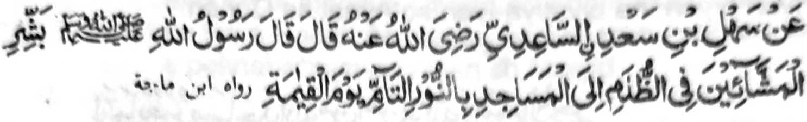
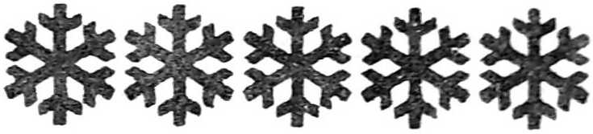

Miyakathitayan ku Sahl bin Sa'di As-sa'idie (Radhiallaho 'Anho) a pitharo iyan a pitharo o Rasulollah (Sallallaho 'Alaihi Wasallam), "Panothol ingka sa mapiya so manga tao a gi-i nggelem ko maliboteng a masa (a pezong) sa Masjid ko (imbegay kiran a) tarotop a sindao si-i ko Alongan a Qiyamah."
So bali o kasong sa Masjid si-i ko kalibotengan o gagawi-i na aya kakhagedama-on na si-i sangkoto a piyakalek-lek a Gawi-i a Kaphangokom, a so omani isa na somasagad sa masimpit a maola-ola. So manga tao a miyatiger iran so diran kapaparo si-i ko manga liliboteng a masa si-i sangka-iya donya na lawan pen a kakhabalasi kiran si-i ko phakatondog (a inged), a sekaniyan na maka-a-awid sa sindao a lebi a masindao a di so alongan. Si-i sa Hadith na aya kiya-aloy niyan na giyangkoto a tao na phakadarepa ko Mimbar a tihaya go da-a magegedam iyan a boko, ko masa a so manga ped na tanto a maleleg-leg. Si-i ko isa a Hadith na miya-aloy ron, ”So Allah na petharo-on Niyan, 'Anda den so manga siringan Aken?' So manga Mala-ikat na tharo-on niran, 'Antawa-a i manga siringan Ka, ya Allah?' Tharo-on o Allah, 'Siran so lalayon pezong ko manga Masjid."'
Si-i ko isa peman a Hadith na miya-aloy ron, "Si-i ko langon a darepa ko donya, na so manga Masjid i pekhababaya-an non o Allah, go so manga padi-an i ipekhagowad Iyan non."
Si-i pen ko isa a Hadith na so manga Masjid i pembethowan sa "Manga sapadan ko Sorga."
So Abu Saeed (Radhiallaho 'Anho) na piyanothol iyan, So Nabi (Sallallaho 'Alaihi Wasallam) na miyaka-isa na pitharo iyan. ’Zaksi-i niyo so paratiyaya o tao a lalayon sa Masjid; oriyan niyan na biyatiya-iyan so Ayaat sa Qur'an:
'Ayabo (a patot) a pethanos ko manga Masjid o Allah na siran so tao a piyaratiyaya niyan so Allah go so Alongan a Maori." [Soorah Taubah:9]
Giyangka-iya phanga-a-aloy na manga ped a Hadith makapantag ko manga kalbihan o Sambayang a Barajoma
1. "So kapagabdas ko masa a di kapaparo, oriyan niyan na somong sa Masjid na montod ro-o (ko oriyan o isa a Sambayang), na nomayao peman ko phakatondog a Sambayang, na pekhalalas iyan so manga dosa."
2. "Saden sa kawatan a babalingan o tao sa Masjid na kala a balas a pekhakowa niyan." Sabap sa opama ka so tao na pho-on sa mawatan na madakel a khilakad iyan na miya-aloy den, a omani milakad o tao na pephakakowa sekaniyan sa balas. Sabap si-i na so saba-ad ko manga Sahabah na miyapanothol a pephamakaroni niran so lakad iran igira pezong siran sa Masjid ka aden mala a makowa iran a balas.
3. "Aden a telo a nganin sangka-iya donya a mbobono-an o manga manosiya o katokawi ran so balas iyan. Siran so kapagebang, so kasong sa Masjid igira Zuhr a mangengedeg-kedeg a alongan, go so kaped ko paganay a sa-ap ko Sambayang a Barajoma"
4. "Pito a manga tao a phakasirong ko Along o Limo o Allah ko Gawi-i a Kaphangokom, ko masa a so omani isa na tanto a malelegeleg ko kapapadalem iyan ko dikha-oma geda-geda a kayao o alongan.
Isa kiran so tao a so poso iyan na mitotompok sa Masjid. Opama aden a sabap a maka-liyo sekaniyan sa Masjid na tonganay niyan a ewida akal anda manaya-i maga-an non makakasoy. Si-i ko isa a Hadith na pekhababaya-an o Allah so tao a pekhababaya-an niyan so Masjid.
Omani isa a rokon ko paratiyaya ko Islam na pekhapo-onan a di khaitong a manga limo ago balas pho-on ko Allah go maka-a-awid sa da-a pithamanan niyan a pahala a pekhisaboyag ko tao a mapaparatiyaya on. Liyo si-i na dapen a sogo-an o Allah a bada a madalem a ma-ana niyan. Ogaid, na lalayon di zaboten so titho a gona o manga sogo-an o Allah, sabap sa da-a tao a ba niyan masezeb so Katao ago so Ongangen o Allah. Saba-ad ko manga Ulama ko Islam na tipengan niran mosay so kipantag o Sambayang a Barajoma ogaid na so manga osayan niran na miyakambida-bida sabap sa mo-onot ko mbida-bida-an niran sa sabot go so kenal iran ko manga page-ema-an o Allah. So paga-adatan a lokes tano a Shaikh Shah Wali Ullah Dehlvi (Sindawan o Allah so Qobor iyan), na pitharo iyan ko kitab iyan a "Hujjatullahi Baligha":
"So kasabeta ko manga tao ko marata a rarad a khibegay kiran o manga dadabi-atan ago okit-okit a paratiyaya iran a miniganat kiran o manga lokes iran, na daden a salakao a baniyan kalawani ko kaphakaompiya niyan kiran so kabaloy o galebek ko Agama ibarat o Sambayang a domayamang ago marinayag so gi-i ron kinggoIalanen o isa a tao sa kapekha-ilaya on o madakel a tao, melagid so aden a sowa iyan antawa ka da. So langon o tao, melagid so tao sa inged odi na so manga tao sa kilida inged, na matago kiran so awida akal sa kinggoIalanen iran non. Mabaloy so Sambayang a gi-i pelalawana-an ago gi-i pangandag o omani isa kiran, sa makadayamang so gi-i ron kinggoIalanen taros a mabaloy a sarta o kaphaginged, aya sampoma iyan na magedam iran a oda so Sambayang na da-a kipantag o kaoyag-oyag. Opama manggola-ola ini, na phakaogopa-i ko gi-i kapanagombalaya ko simba ago pangongonotan ko Allah, ago khabaloy a mala-i gona a misambi ko manga okit go panarima ago dadabi-atan a ganat sa andang a giyoto so khapakay a aya kiran bo makakaid. Sabap sa so Sambayang na ayabo simba a kao-ombawa niyan so manga ped sa kipantag ego kalalangkap sa donya, melagid ko penarima ago so kapa-ar, na mimbaloy a tanto a di mipezomala so kapakadayamang o kipamayandegen non a nggolalan ko kipanolonen non ago so kiyawiden non a akal ko kinggoIalanen non sa Barajoma, a ron miphamayandeg so Sambayang a madiyamong so tarotop a kaisa isa ko ropa na go antap."
"Aya di ron salakao si-i ko omani kaphaginged o di na lipongan o agama, na aden a da mapira ka tao a khapakay ron a magimam na so manga pod na baden pephaka-onot. Aden pen a saba ad a khapakay a makatiyolin siran a nggolalan ko maito bo a pangoyat o di na maito bo a pangangalek. Aden peman a ika telo ba-ad ko manga tao a tanto a malobay so paratiyaya iran, na opama ka di kiran pakmggoialan sa pekhailay o madakela tao, na mararani a imbagak iran baden. Sabap si-i na para ko lebi a kamapiya-an o kaphaginged a Islam na so langon o magi-ingedon na inggolalan niran angka iya a simba sa madiyamong siran ago Barajoma, ka aden makazenggaya so madarainon ago so barasimba, na go aden mambo makazenggaya so pekhiyas on mamamayandeg. Khabaloy pemana-i a kasabapan sa kapakaphasiyonot o da-a sowa iyan ko manga Ulama, go makapaganad so di mata-o ko mata-o so manga paliyogat ko simba. So barasimba na mapakathendo-ai niyan so benar ago so ribat go so titho ko di benar, ka aden pamondas so benar ago titho ago aden maren so di benar ago so ribat."
"Ago salakao si-i, na giyangka-iya kalilimod o manga tao a pekhababaya-an niran so Allah, gi-i mbabanog ko Limo Iyan, go tatap so kika-aleken niran Non go so manga poso iran ago niyawa iran na phapasiyonot si-i bo Rekaniyan, na aden a piyakamemesa a rarad iran ko kapekhagamita iran ko kapakatoron o Limo ago Rila Iyan a pho-on sa langit."
"Aya lawan si-i pen na, so kapephaginged a Muslim na piyakatindeg ka aden makaombao so katharo o Allah ago so Kokoman o Islam na aden makaphaporo ko manga ped a Agama. Giyangka-iya a antap na di khakowa taman sa so langon o Muslim, mala maito, barabangensa-an sa di, kalilid a tao odi na mala-i daradat, na melagi-lagid a kinggoIalanen niran sangka-iya a piphaporo-an a simba ago miyasoti-soti a paparangayan ko Islam (ma-ana so Sambayang) a nggolalan sa katimo iran sa isa a darepa. Giya-i sabap a so Shariah (Kokoman o Islam) na tanto niyan a inipami-is so kazambayang igira Juma’at go so kazambayang sa Barajoma, mokit ko kiyapagosaya niyan non ko kamapiya-an a madadalemon ago so manga kasiksa-an ko kibagaken non. So karayag a kailaya on na go so kamasa iron ko kinggolalanen sangka-iya a tanto a mala-i kipantag a simba, na dowa a kalilimod a kapenggolalanan niyan: isa a kalilimod na so manga tao a isa ka lokes odi na isa ka lipongan, ika dowa na soden so kalangon o tao ko inged. Sabap sa kalebod a kakha-timo-a sangkoto a paganay go so karegen o kakhatimo-a sangkoto a ika dowa, na giyoto-i sabap sa sangkanan a paganay na aya kiyokoman non na pethimo-timo somanga tao ko oman wakto o lima a Sambayang na giyangkoto a ika dowa na oman bo pito gawi-i a gi-i kathimo-timo na giyoto i sabap a kinisogo-on ko Sambayang a Jama'at."
